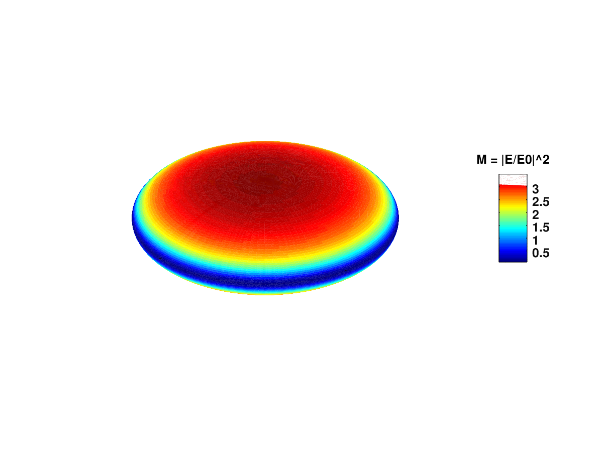
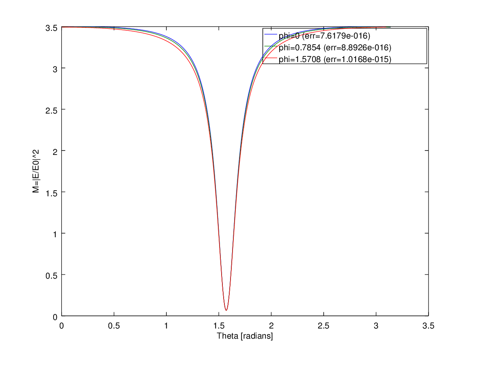

Source code
%% ScriptSolveForNearField
% Example script showing how to obtain the field expansion coefficients,
% far-field cross-sections and surface field properties for a spheroid in a
% fixed orientation and at a single wavelength.
% Outputs the cross-sections and surface-averaged properties with accuracy
% estimates.
% Plots the field enhancement factors as a function of theta for three values of phi.
% Also produces a 3D plot of the surface field intensity on the particle.
%%
%% Initialization
%
% Note that you need to run InitPath in the root folder first to add
% required folders to the Matlab path so that functions can be called
% Alternatively, uncomment the following line
%
% run('..\InitPath');
%
% The following parameters should be defined:
%%
% * a: semi-axis along x,y
% * c: semi-axis along z
% * k1: wavevector in embedding medium (of refractive index nM) (k1=2*pi*nM/lambda)
% * s: relative refractive index (s=n_Particle / nM)
% * N: number of multipoles for T-matrix
% * nNbTheta: number of thetas for quadratures
% * sIncType: string such a 'KxEz' defining the incident field)
% * or stIncPar: struct defining the incident field (alternative
% to sIncType)
% * nNbThetaPst: number of thetas for surface field calculations
clear
close all
%% Parameters of the scattering problem
% We define parameters for a gold nanodisc in water, modeled as an oblate
% spheroid
%
% <<../fig/schematico.png>>
%
c = 15; % in nm
a = 45; % in nm, i.e. 20 x 100nm full-axes
lambda = 650; % in nm
epsilon2 = epsAu(lambda);
epsilon1 = 1.33^2; % for water
% Define incident excitation along main axis
sIncType = 'KxEz';
%% Convergence parameters
% Maximum multipole order for T-matrix and series expansions of fields
N = 40;
% Number of points for Gaussian quadratures to compute integrals in P and Q matrices
nNbTheta = 120;
% Number of points for post-processing (computing the surface fields
% averages)
nNbThetaPst = 360;
%% Collect simulation parameters in a structure
k1 = 2*pi/lambda * sqrt(epsilon1);
s = sqrt(epsilon2)/sqrt(epsilon1);
stParams.a=a; stParams.c=c;
stParams.k1=k1; stParams.s=s;
stParams.N=N; stParams.nNbTheta=nNbTheta;
stParams.sIncType = sIncType;
% For surface fields, the following parameters are also needed:
stParams.lambda = lambda;
stParams.epsilon2= epsilon2;
stParams.epsilon1= epsilon1;
stParams.nNbThetaPst = nNbThetaPst;
% Optional parameters may also be defined as follows:
stOptions.bGetR = true; % This is needed for near fields and will be overridden in any case
stOptions.Delta = 0; % Use Delta=-1 to estimate Delta automatically
stOptions.NB = 0; % NB will be estimated automatically
stOptions.bGetSymmetricT = false;
%% T-matrix calculation
tic;
[stC, stAbcdnm, stEsurf] = slvForNearField(stParams,stOptions);
fprintf('\nT/R-matrices and near fields (N = %d) ... done in %.f seconds.\n', N, toc);
% To test for convergence and accuracy for a given set of parameters, one
% can for example repeat the calculation with N=N+5 and nNbTheta=nNbTheta+5
% as illustrated below
fprintf('Convergence testing...');
tic;
stParams2=stParams;
stParams2.N=stParams2.N+5;
stParams2.nNbTheta=stParams2.nNbTheta+5;
[stC2, stAbcdnm2, stEsurf2] = slvForNearField(stParams2,stOptions);
fprintf('\nT/R-matrices and near fields (N = %d) ... done in %.f seconds.\n', N, toc);
fprintf('Results for a=%g, c=%g, k1=%g, s=%g+%gi, N=%d, Nt=%d\n',...
a, c, k1, real(s),imag(s), N, nNbTheta);
fprintf('\nCross sections for fixed excitation (and estimated accuracy):\n');
fprintf('Cext = %.20g, relative error: %.2g\n', stC.Cext, abs(stC.Cext./stC2.Cext-1))
fprintf('Csca = %.20g, relative error: %.2g\n', stC.Csca, abs(stC.Csca./stC2.Csca-1))
fprintf('Cabs = %.20g, relative error: %.2g\n', stC.Cabs, abs(stC.Cabs./stC2.Cabs-1))
fprintf('\nCross sections for orientation-averaged excitation (and estimated accuracy):\n');
fprintf(' = %.20g, relative error: %.2g\n', stC.Cextoa, abs(stC.Cextoa./stC2.Cextoa-1))
fprintf(' = %.20g, relative error: %.2g\n', stC.Cscaoa, abs(stC.Cscaoa./stC2.Cscaoa-1))
fprintf(' = %.20g, relative error: %.2g\n', stC.Cabsoa, abs(stC.Cabsoa./stC2.Cabsoa-1))
fprintf('\nSurface-averaged surface-field properties (accuracy not tested):\n');
fprintf('<|E|^2> = %.20g\n', stEsurf.MLocAve);
fprintf('<|E_{perp}|^2> = %.20g\n', stEsurf.MLocPerpAve);
fprintf('<|E|^4> = %.20g\n', stEsurf.F0E4Ave);
%% Examples of postprocessing for surface fields
%
% The following gets the surface field intensity enhancement factor (M) at
% one or more given phi (as a function of theta)
phi0=[0,pi/4,pi/2];
M = pstGetThetaDepFieldIntensity(stEsurf,phi0); % [3 x T]
M2 = pstGetThetaDepFieldIntensity(stEsurf2,phi0); % [3 x T]
relerrM = max(abs(M-M2),[],2)./max(abs(M2),[],2); % [3 x 1]
% Make plots to show results
figure('Name','Theta-dependence of surface-field intensity M=|E|^2 for fixed phi');
plot(stEsurf.theta, M);
legend({['phi=', num2str(phi0(1)), ' (err=', num2str(relerrM(1)),')'], ...
['phi=', num2str(phi0(2)), ' (err=', num2str(relerrM(2)),')'], ...
['phi=', num2str(phi0(3)), ' (err=', num2str(relerrM(3)),')']}, ...
'Location', 'Best');
xlabel('Theta [radians]')
ylabel('M=|E/E0|^2')
% The following makes a 3D surface plot of the surface
% field everywhere on the surface
% NOTE that this requires to recompute all
% the surface fields from scratch. Using 90x90 pts here:
tic;
stResE=pstMakeStructForField(stAbcdnm, stParams);
pstPlotAllSurfaceField(90, stResE);
fprintf('\n3D plot ... done in %.f seconds.\n', toc);
Execution results
octave>ScriptSolveForNearField
sphCalculatePQ: Calculating P,Q for 41 m-values with N_Q = 40, N_B = 41, N_Theta = 120
T/R-matrices and near fields (N = 40) ... done in 3 seconds.
Convergence testing...sphCalculatePQ: Calculating P,Q for 46 m-values with N_Q = 45, N_B = 45, N_Theta = 125
T/R-matrices and near fields (N = 40) ... done in 3 seconds.
Results for a=45, c=15, k1=0.0128564, s=0.119065+2.67664i, N=40, Nt=120
Cross sections for fixed excitation (and estimated accuracy):
Cext = 162.29599945903115099, relative error: 2e-015
Csca = 88.598051846348710114, relative error: 8.9e-016
Cabs = 73.697947612682440877, relative error: 3.6e-015
Cross sections for orientation-averaged excitation (and estimated accuracy):
= 23273.007567191281851, relative error: 5e-015
= 13699.998155139272058, relative error: 4.8e-015
= 9573.0094120520097931, relative error: 5.3e-015
Surface-averaged surface-field properties (accuracy not tested):
<|E|^2> = 2.4940806742084613568
<|E_{perp}|^2> = 2.4537899387743351554
<|E|^4> = 7.1825788909828434115
warning: legend: 'best' not yet implemented for location specifier
3D plot ... done in 1 seconds.
Generated graphics
